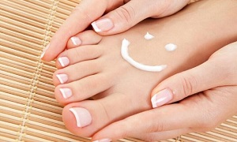

Los pies son la parte del cuerpo que mayor peso y esfuerzo soportan para
poder cumplir todas las funciones.
Por ello, en este artículo hablaremos de
los cuidados dológicos básicos que deben recibir los pies dependiendo del esfuerzo que realicen
y de las actividades a las que los sometamos.
Existe una serie de cuidados básicos que, aconsejamos a todo el mundo:
- Higiene de pies: lavarlos diariamente con agua y jabón neutro. Secarlos totalmente, también entre los dedos, para quitar toda la humedad.
- Hidratarlos frecuentemente con cremas específicas para ellos. Evitar introducir crema entre los dedos
- las uñas de forma recta para evitar que se claven en la carne y ocasionen alguna infección.
- mejor utilizar calcetines de tejidos adecuados a la actividad que se está realizando. Realizar ejercicio de forma regular.
- al podólogo al menos una vez al año para hacer una revisión.
- Usar siempre un calzado adecuado a la actividad que se va a realizar.
Fuente: Clínica de Podología Elena García en Granada